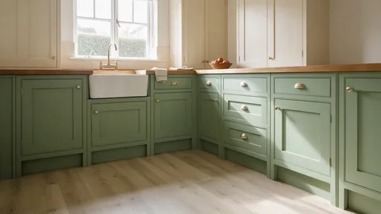
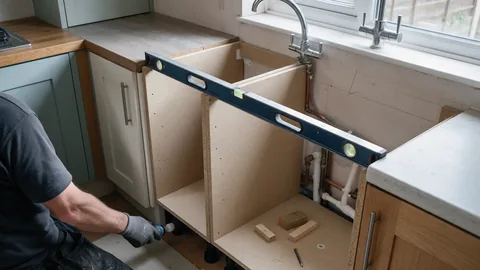
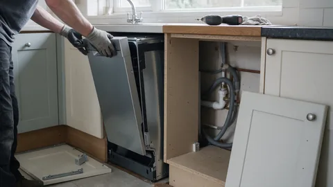
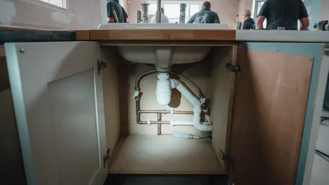
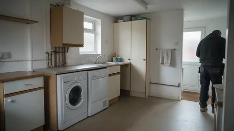
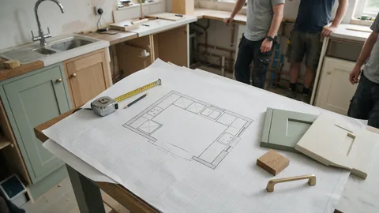
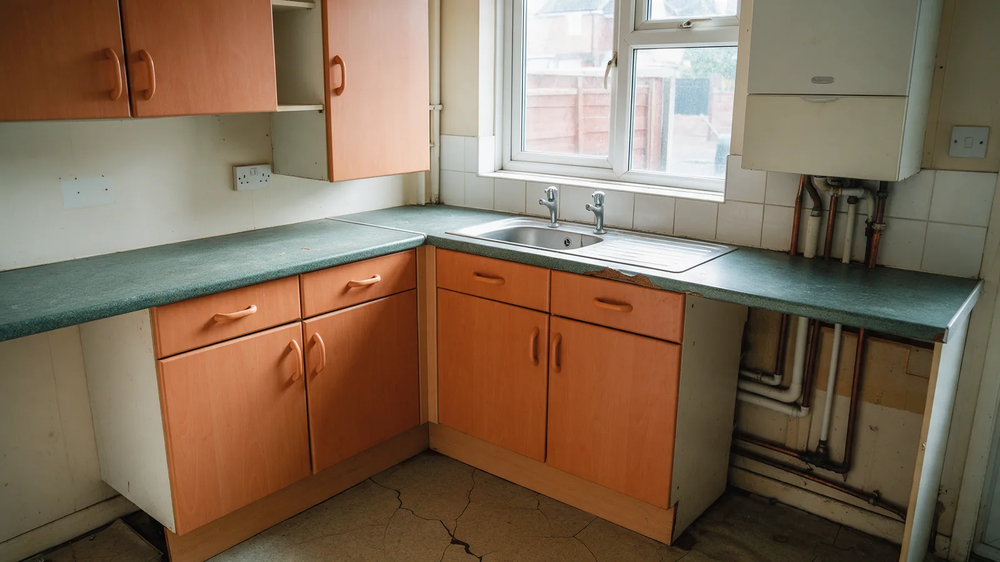
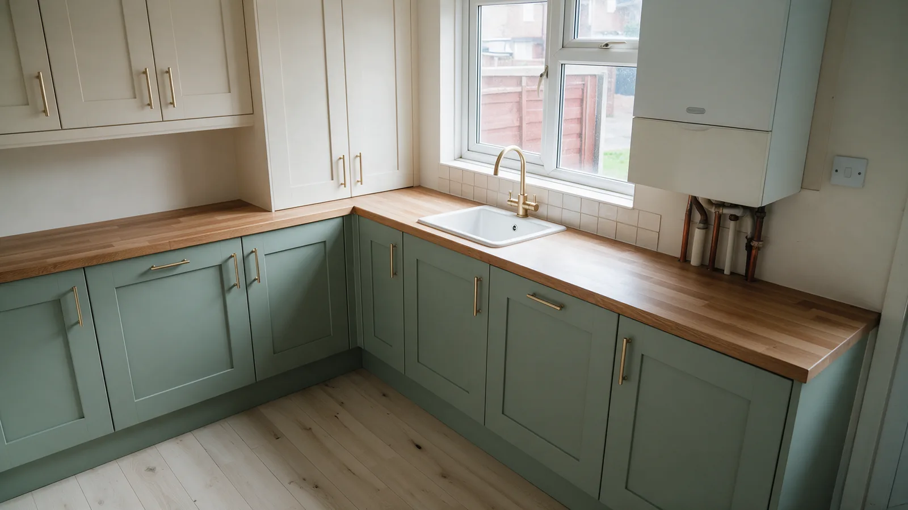

Our work
Kitchens like yours.
Hearthley is a fictional firm, so none of this is a real job. The pictures were generated for this demo to show the kind of work, and the stages a real fitter would photograph.
12 jobs shown

Generated photoFull kitchen fitHeswall · sample Generated photoStripped out, day oneBebington · sample
Generated photoStripped out, day oneBebington · sample Generated photoCarcasses in, doors to comeNeston · sample
Generated photoCarcasses in, doors to comeNeston · sample
Generated photoLevelling the base unitsWest Kirby · sample Generated photoStone worktop fittedHeswall · sample
Generated photoStone worktop fittedHeswall · sample Generated photoSolid oak, oiledHoylake · sample
Generated photoSolid oak, oiledHoylake · sample Generated photoNew doors on sound carcassesBebington · sample
Generated photoNew doors on sound carcassesBebington · sample Generated photoDrawers and handlesNeston · sample
Generated photoDrawers and handlesNeston · sample
Generated photoIntegrated dishwasherWest Kirby · sample
Generated photoSink and waste, plumbedHeswall · sample
Generated photoUtility room in a back hallHoylake · sample
Generated photoPlan before anything is orderedBebington · sample

Illustrative, not a real job. Two generated pictures of the same room, one before and one after.
Before and after
Same room, nine days apart.
Kitchens make an easy before and after, because the window never moves. You can see what the work bought and what it did not.
On a real site this is where a fitter's own pairs would sit, with the town and the month under each one.
Ask for a quoteWant one like these?
Tell us the room and where you are. We will come out and tell you what it actually involves.